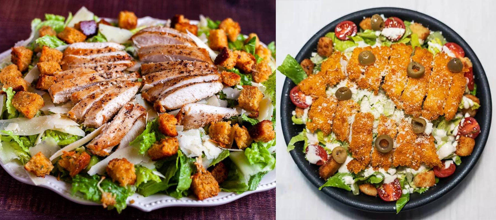

سالاد سزار یکی از محبوبترین سالادهاست که معمولاً شامل کاهو، سس مخصوص، پنیر پارمزان و تکههای نان تست شده میشود. در ادامه طرز تهیه آن را به شما آموزش میدهم.
مواد لازم:
- کاهو رومی (یا کاهو لوکسی) – ۱ عدد
- نان تست – ۲ تا ۳ برش
- روغن زیتون – ۲ قاشق غذاخوری
- پنیر پارمزان (رنده شده) – ۱/۴ فنجان
- سس سزار (میتوانید خودتان تهیه کنید یا آماده بخرید)
مواد لازم برای تهیه سس سزار:
- زرده تخممرغ – ۱ عدد
- سیر (ریز خرد شده) – ۱ حبه
- سس ورچستر شایر – ۱ قاشق چایخوری
- آب لیمو – ۲ قاشق غذاخوری
- روغن زیتون – ۱/۳ فنجان
- نمک و فلفل – به میزان لازم
طرز تهیه:
تهیه سس سزار:
در یک کاسه کوچک، زرده تخممرغ، سیر ریز خرد شده، سس ورچستر و آب لیمو را با هم مخلوط کنید.
به آرامی روغن زیتون را اضافه کنید و مراقب باشید که مخلوط کامل یکدست شود.
نمک و فلفل به میزان لازم اضافه کنید و هم بزنید.
تهیه نان تست:
نانها را به شکل مکعبهای کوچک برش بزنید.
آنها را با روغن زیتون آغشته کنید و در یک تابه تابه تابه یا در فر تست کنید تا طلایی و ترد شوند.
آمادهسازی کاهو:
کاهو را خوب بشویید و در قطعات بزرگ برش بزنید.
آن را با سس سزار مخلوط کنید تا کاهو به خوبی آغشته شود.
نهایتاً:
کاهو را در ظرف سرو قرار دهید.
نانهای تست شده و پنیر پارمزان رنده شده را روی آن بپاشید.
در صورت دلخواه میتوانید دوباره کمی سس روی سالاد بریزید.
سرانجام، سالاد سزار شما آماده است! میتوانید آن را به عنوان پیشغذا یا غذای سبک سرو کنید. نوش جان!
